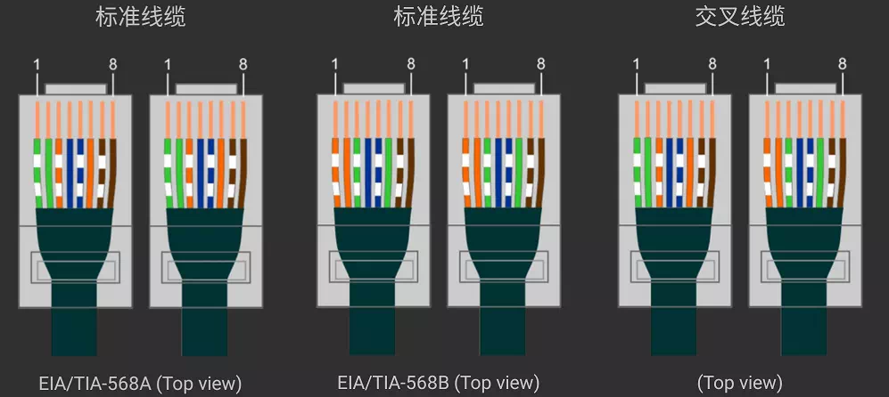

Live Wire Naught wire 5线cee防爆插头 地线插脚长一些的原因 1、 如果用电器本身带一些电话，地线接头比较长使用时先接到地线，把电导到地下，然后再到火线 和零线，用电器正常使用，人会安全一些。 2、 当你使用完之后，要断电的时候，先火线和零线先离开，电源断开，而如果在使用过程中用电器不小心漏电的话，而地线接头比较长，所以地线最后离开，它会把漏出的电导到地下，人身会更安 全。软铜线和硬铜线
一、 相对来说，同等截面的情况下，软丝 铜线更好。 二、 软铜线和硬铜线的区别： 1、软铜线载流量比硬铜线要大。 在相同截面情况下，软铜线的表面积要远 大于硬铜线的表面积。由于交流电有趋肤 效应（当导体中有交流电或者交变电磁场 时，导体内部的电流分布不均匀，电流集 中在导体的“皮肤"部分，也就是说电流集 中在导体外表的薄层，越靠近导体表面， 电流密度越大的现象），故软铜线的载流 量要比硬线大。另外软铜线因表面积大， 其散热效果也比硬铜线好 。 由于交流电的趋肤效应，同一截面导线软 线的载流量要比硬线大,一般要高于硬线 —个等级（如1.5的软线可吃到硬线2.5的 载流量），主要还是散热比硬线好阻值低，耐 压都—样. 使用要看具体场合，一般日常的装潢，建 筑在满足载流量的前提下，一般用硬线，价 格毕竟比软线低，也便于施工，但有震动的 设备,如行车，建议好是用软线好，震动会把 硬线震断，故障率高. 各种厂房也可用硬线，一般软线用的多，厂 房配电电流都比较大，硬线最大也就6平方, 也满足不了需要. 硬线做起来美观，软线不行，得配线槽. 集肤效应就是电流通过电线时多数电流会 从电线的外维通过，所以电线的平方倍数 增加不意味着电流的成倍增加，频率越 高，表面流通的电流也就越多，比如50H Z的交流电1平方的电线可以通10A,10平 方的电线可能只能通过60A 2.我们常用的电力电缆线有单股线和多股 线，但是信号传输电缆线都是采用多股，这 是因为信号电流频率一般都比较高，趋肤效 应明显，为了增加电线表面积、提高利电线 用率，所以信号传输电缆线都是采用多股 线。 一般来说在交流50HZ的频率下，趋肤效应 的穿透深度大约为6mm0当导线直径大于 12mm时，导体中心的电流几乎为零。所以 你可以观察一下，低压电柜里的矩形母线排 （铜排）厚度都不超过10mm 三、集肤效应的应用 导体中交变电磁场的强度随着进入导体的深度 而呈指数递减，因此在防晒霜中混入导体微粒（一般 是氧化锌和氧化金太），就能使阳光中的紫外线（高频电 磁波）的强度减低。这便是物理防晒的原理之一。此 外，趋肤效应也是电磁遮罩的方法之一，利用趋肤 效应可以阻止高频电磁波透入良导体而作成电磁遮 罩装置，这也是电梯中，手机收讯不好的原因。在 工业应用方面，利用趋肤效应可以对金属进行表面 淬火。 趋肤效应的应用: 在高频电路中可用空心铜导线代替实心铜 导线以节约铜材。架空输电线中心部分改 用抗拉强度大的钢丝。虽然其电阻率大一 些，但是并不影响输电性能，又可增大输 电线的抗拉强度。利用趋肤效应还可对金 属表面淬火，使某些钢件表皮坚硬、耐 磨，而内部却有一定柔性，防止钢件脆 裂。 线芯3,硬线制作工艺相对比软线简单4,高频电路 软线比硬线载流量大，肌肤效应。5,如果硬是因为 6、抗“集肤效应”（即电流频率越高，越 是趋于导线表面，则中心部分无电流，造成浪 费）。硬线较差，软线较好； 合在一起的，质地较软，因此叫做软线，一般 用符号BVR来表示，其全称是铜芯聚氯乙烯绝 缘软线。B代表材料是铜的；V代表绝缘是聚-氯乙烯；R是汉语拼音ruan的首字母，代表软］ 线。 硬线又叫塑铜线，一般是单根的铜线，质地较 硬，因此叫做硬线，用符号BV表示，其全称 是铜芯聚氯乙烯绝缘电线。各字母代表的意思 和软线的相同，只是没有R而已。 软线和硬线主要区别除了一个软一个硬之外， 还主要表现在价格方面：同样粗细的软线要比 硬线价格较高。 另外粗细相同的软硬线，软线允许通过的电流 要比硬线要大，即载流量更大一些。软线的载 流量要大是因为相同粗细的情况下，软线拥有 更大的表面积。当工作于交流线路中时，电流 会随着频率的升高逐渐趋于在导线的表面流 动，因此说中间的导线是没有电流流动的。电 流的频率越高，这个效应也就越明显。 但是我们家庭用的电的频率都是50Hz,属于 低频，集肤效应不是那么明显，所以相同粗细 的软硬线的载流量差不多少。硬线虽然要少一 些，但是硬线的牢固性要好，接线的效果要 好，更加的美观结实，不易松动：线径载流
允许通过的电流=(电压*电线横截面积)/(电线电阻率*电线的长度)
电线的安全载流量还跟它的材质有关，要想知道精确就必须查表。
大概估算如下：
以铜导线为例
10平方以下的6-7A/平方。
10到20平方 4-5A/平方。
20到50平方 3-4A/平方.
50平方到350平方1-2A/平方
网线
